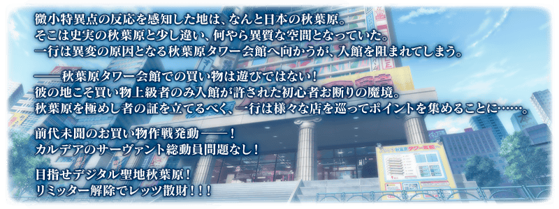
舉辦期間限定活動「Akihabara Explosion！ ～願望的街道與被刻上愛的雕像們～」！
靠從者總動員挑戰購物關卡來攻略，制霸秋葉原的街道吧！
本活動中，靠從者總動員攻略購物關卡來週遊秋葉原的店家後，進行享受故事的主線關卡。
攻略購物關卡的關鍵是借助許多從者的力量！
強化更多的從者，向活動挑戰吧！
※本頁面皆為開發中圖片。會有與實際圖片相異的情況。
◆活動舉辦期間◆
2021年3月24日(三) 17:00～4月7日(三) 11:59
◆活動參加條件◆
滿足以下條件的御主才能參加
・通過「特異點F 炎上汙染都市 冬木」
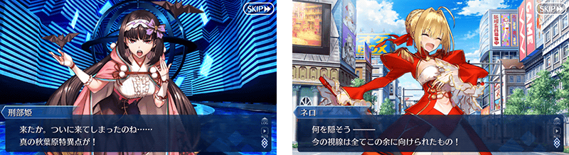
「終局特異點」通過水準的敵人出現！
期間限定活動「Akihabara Explosion！ ～願望的街道與被刻上愛的雕像們～」是會出現「終局特異點」通過水準敵人的試驗活動。
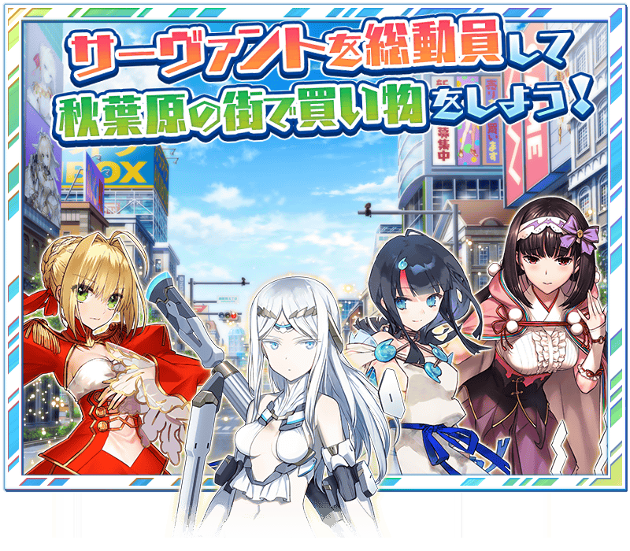 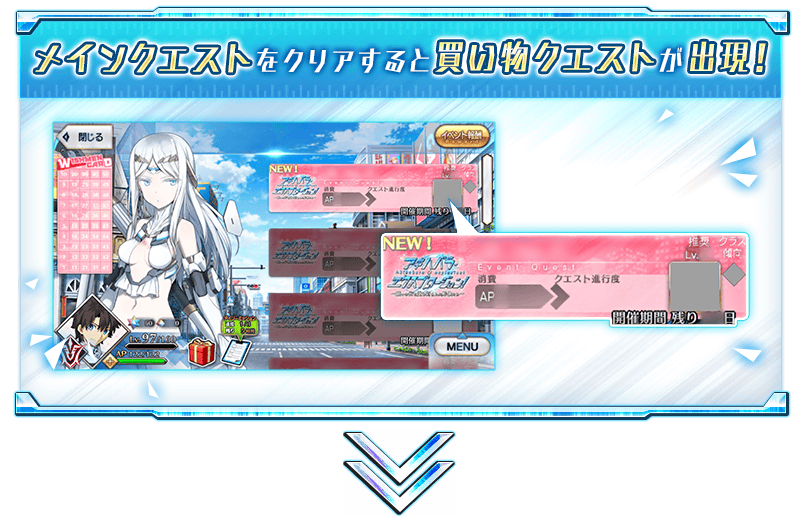 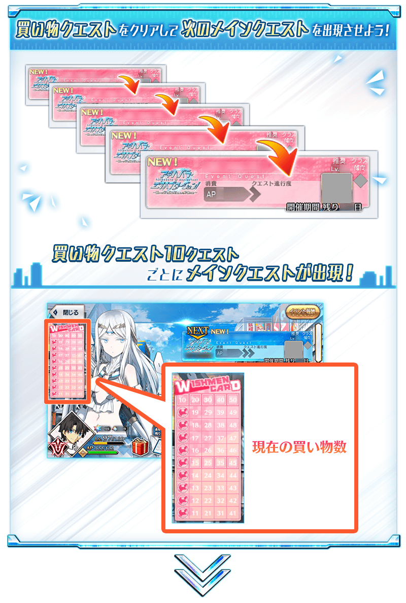 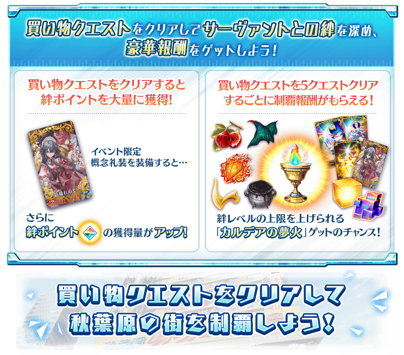
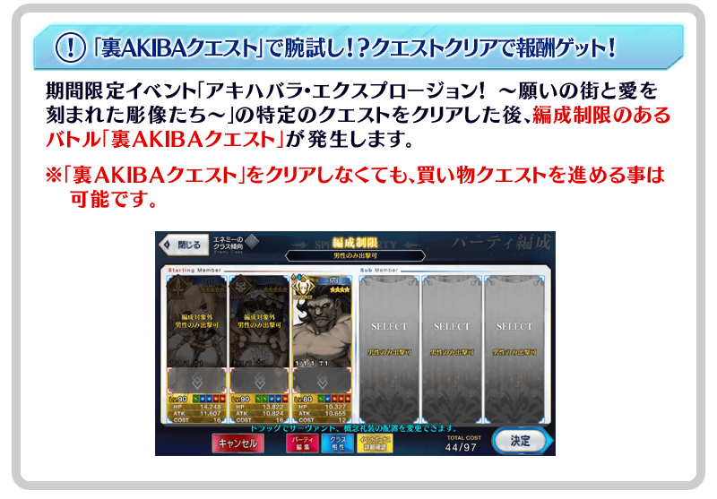
通過購物關卡的話，在關卡出撃的從者會變成「疲勞」狀態而無法出撃。
將未「疲勞」的從者替換入編成，挑戰下個購物關卡吧！
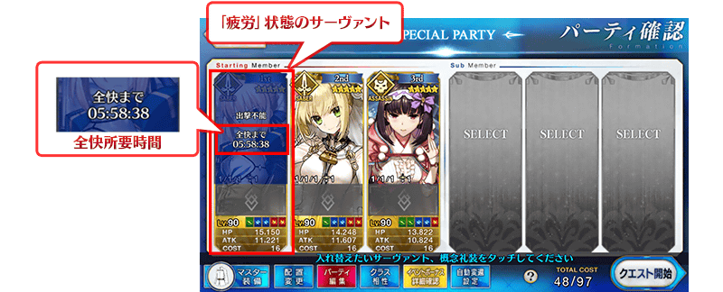
※只有戰鬥勝利時會變成「疲勞」狀態，敗北或撤退的情況不會變成「疲勞」狀態。 ※持有好幾位同樣從者的情況，未出撃的同從者也同樣變得無法出撃。(就算不同再臨階段的情況也同様會變成「疲勞」狀態。) ※適用「疲勞」狀態的只有期間限定活動「Akihabara Explosion！ ～願望的街道與被刻上愛的雕像們～」內，平常的主線關卡和強化關卡等常駐的關卡為對象外。
關於「疲勞」狀態的回復
從者的「疲勞」狀態會隨著時間經過來回復。請注意無法透過道具和令咒等進行回復。
還有，在進行主線關卡所開放的「休息」設定從者的話，能加快「疲勞」狀態的回復時間。
讓「疲勞」中的從者於休息場所休息，更快變得可再出撃吧！
※「疲勞」狀態要「全回復所需時間」變成0:00:00才結束回復。 ※使用休息場所中的從者能任意替換，加快回復時間效果於休息途中停止的時間點會消失。 ※請注意使用休息場所中的從者無法移動到靈基保管室。 ※請注意使用裝置的時間與設定未設定成「自動」的情況，會有回復為止的時間未正確顯示的情況。
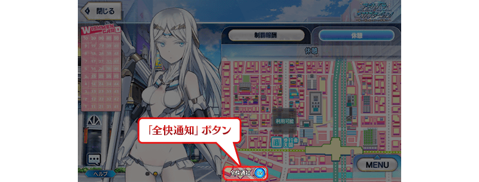
◆關於休息場所使用時的「全回復通知」◆
「全回復通知」為ON的狀態下，在休息場所設定從者後結束程式的話，在休息場所設定的從者全員全回復時，變得會收到推送通知。
※使用本功能時，請變更使用裝置中收到從程式的通知設定。就算本功能為ON的狀態，在使用裝置設定成不收到通知的情況，也不會顯示推送通知。 ※設定方法會因使用的裝置而異。
休息場所與從者的相性
「休息」內的休息場所會透過主線關卡的進行而增加。
各休息場所有著與從者的相性，設定相性良好從者的情況，會更縮短回復時間。
儘可能選擇與從者相性良好的休息場所，更有效率回復「疲勞」狀態吧！
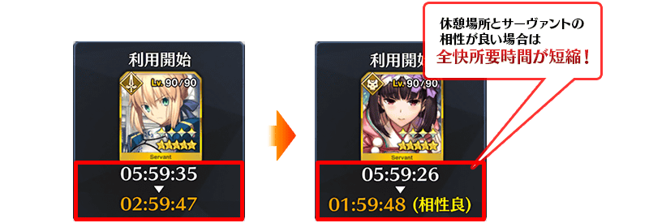
期間限定活動「Akihabara Explosion！ ～願望的街道與被刻上愛的雕像們～」中，於「從者選擇畫面」的「排序順序的設定」追加「全回復所需時間順序」。
「智慧排序」功能為ON的話，變得會考量是否「疲勞」狀態來排序，可優先顯示能出撃的從者。
另外，在為了疲勞回復使用各休息場所時，選擇「全回復所需時間順序」且「智慧排序」功能為ON的話，變得會考量與休息場所的相性，以回復效率高的順序優先顯示「疲勞」狀態的從者。


除了期間限定活動「Akihabara Explosion！ ～願望的街道與被刻上愛的雕像們～」一部份的關卡外，與平常的隊伍編成不同，無法選擇支援從者做為隊伍的成員。
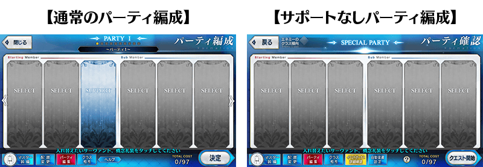
【3月24日(三) 17:00追記】
以通過期間限定活動「Akihabara Explosion！ ～願望的街道與被刻上愛的雕像們～」後記(エピローグ)及「終局特異點」的御主做為對象，開放高難易度的「挑戰關卡」。
「挑戰關卡」就算通過後也不會消失，可以變更從者和概念禮裝的組合等後無限次挑戰。
「挑戰關卡」中可使用好友的支援從者，就算「疲勞」狀態的從者也可在關卡出撃。
另外，就算通過「挑戰關卡」從者也不會變成「疲勞」狀態。
※關卡通過報酬、戰利品、御主EXP、魔術禮裝EXP、絆點數只可在初次通過時獲得。
◆挑戰關卡開放時間◆
2021年3月24日(三) 17:00～
◆挑戰關卡參加條件◆
滿足以下條件的御主才能參加
・通過期間限定活動「Akihabara Explosion！ ～願望的街道與被刻上愛的雕像們～」的後記(エピローグ)
・通過「終局特異點」
◆挑戰關卡初次通過報酬◆
傳承結晶 1個
超值攻略方法・其1
做為初登場從者的「★5(SSR)伽拉忒亞」在期間限定活動「Akihabara Explosion！ ～願望的街道與被刻上愛的雕像們～」的活動關卡中會得到「自身的攻擊威力提升100%」及在關卡通過時得到的「自身的絆點數獲得量提升50%」、「疲勞度回復速度提升200%」的加成！
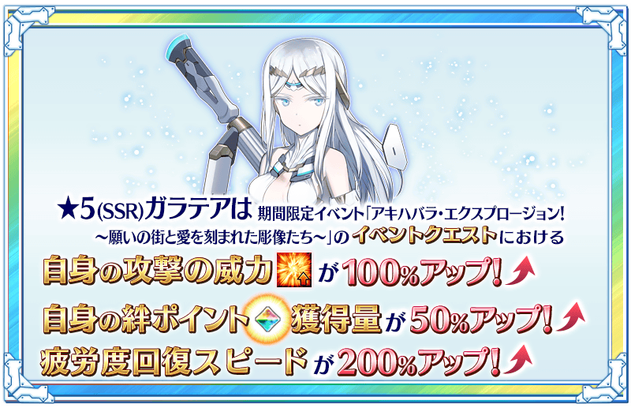
超值攻略方法・其2
裝備可靠通過購物關卡來入手的活動限定概念禮裝「★5(SSR)絡繰れぬモノ」的話，在期間限定活動「Akihabara Explosion！ ～願望的街道與被刻上愛的雕像們～」中絆點數的獲得量會提升！
【活動限定概念禮裝】
| 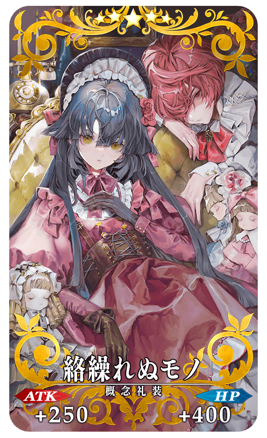 |
★★★★★SSR |
※只限「瑪琇・基利艾拉特」裝備時，會變成『我方全體＜含候補＞在通過「Akihabara Explosion！」關卡時獲得的絆增加20%』的效果。(支援時無效)
超值攻略方法・其3
裝備期間限定概念禮裝，讓期間限定活動「Akihabara Explosion！ ～願望的街道與被刻上愛的雕像們～」活動關卡中自身的攻擊威力提升！
★5(SSR)以下的從者裝備在聖晶石召喚Pick Up的期間限定概念禮裝「★5(SSR)夢の生まれる街」的話「自身的攻擊威力會提升50%」、★4(SR)以下的從者裝備「★4(SR)ジャンク・ショップ」的話「自身的攻擊威力會提升40%」、★3(R)以下的從者裝備「★3(R)ハオ・チー？」的話「自身的攻擊威力會提升30%」。
※只有「瑪琇・基利艾拉特」不受稀有度限制，無論裝備哪個概念禮裝的情況都會得到「自身的攻擊威力提升」的效果。
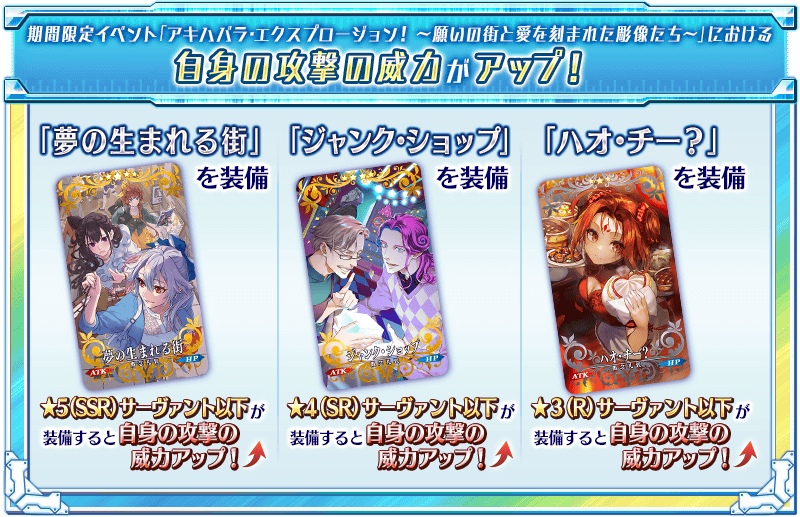
期間限定活動「Akihabara Explosion！ ～願望的街道與被刻上愛的雕像們～」中每通過5個購物關卡的話，會領取制霸報酬。
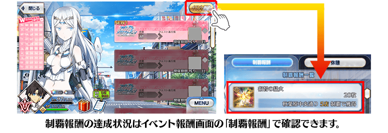
| 關卡數 | 制霸報酬 | 個數 | |
|---|---|---|---|
| 第5店 |

|
睿智的猛火ALL★4(SR) | 20 |
| 第10店 |

|
戰馬的幼角 | 5 |
| 第15店 |
|
睿智的猛火ALL★4(SR) | 20 |
| 第20店 | 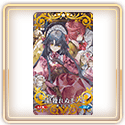 | 活動限定概念禮裝★5(SSR)「絡繰れぬモノ」 | 1 |
| 第25店 |
|
睿智的猛火ALL★4(SR) | 20 |
| 第30店 | 活動限定概念禮裝★5(SSR)「絡繰れぬモノ」 | 1 | |
| 第35店 |
|
睿智的猛火ALL★4(SR) | 20 |
| 第40店 | 活動限定概念禮裝★5(SSR)「絡繰れぬモノ」 | 1 | |
| 第45店 |
|
睿智的猛火ALL★4(SR) | 20 |
| 第50店 |

|
迦勒底的夢火 | 1 |
| ??? | 悠久之實 | 5 | |
| ??? | 活動限定概念禮裝★5(SSR)「絡繰れぬモノ」 | 1 | |
| ??? | 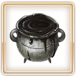 | 黑獸脂 | 5 |
| ??? | 活動限定概念禮裝★5(SSR)「絡繰れぬモノ」 | 1 | |
| ??? |

|
龍之逆鱗 | 5 |
| ??? |

|
英靈結晶・流星之芙芙ALL★4(HP) | 1 |
| ??? |
|
戰馬的幼角 | 5 |
| ??? | 活動限定概念禮裝★5(SSR)「絡繰れぬモノ」 | 1 | |
| ??? |

|
英靈結晶・日輪之芙芙ALL★4(ATK) | 1 |
| ??? |
|
迦勒底的夢火 | 1 |
| ??? | 悠久之實 | 5 | |
| ??? |
|
英靈結晶・流星之芙芙ALL★4(HP) | 1 |
| ??? |

|
稀有稜鏡 | 1 |
| ??? |
|
英靈結晶・日輪之芙芙ALL★4(ATK) | 1 |
| ??? |
|
戰馬的幼角 | 5 |
| ??? |
|
英靈結晶・流星之芙芙ALL★4(HP) | 1 |
| ??? | 悠久之實 | 5 | |
| ??? |
|
英靈結晶・日輪之芙芙ALL★4(ATK) | 1 |
| ??? | 黑獸脂 | 5 | |
| ??? |

|
傳承結晶 | 1 |
| ??? |
|
稀有稜鏡 | 1 |
| ??? |

|
鬼炎鬼燈 | 5 |
| ??? |
|
稀有稜鏡 | 1 |
| ??? |
|
英靈結晶・流星之芙芙ALL★4(HP) | 1 |
| ??? | 黑獸脂 | 5 | |
| ??? |
|
英靈結晶・日輪之芙芙ALL★4(ATK) | 1 |
| ??? |
|
龍之逆鱗 | 5 |
| ??? |
|
迦勒底的夢火 | 1 |
| ??? |
|
鬼炎鬼燈 | 5 |
| ??? |
|
傳承結晶 | 1 |
※制霸報酬可在通過該購物關卡時獲得。
【3月24日(三) 17:00追記】
強化「★5(SSR)尼祿・克勞狄烏斯〔Bride〕」的特別關卡「從者強化關卡」，在迦勒底之門永久追加。
不僅進行對象從者的強化，也可獲得聖晶石做為關卡通過報酬。
※請注意在從者強化關卡沒有文字冒險部份。
◆追加時間◆
2021年3月24日(三) 17:00～
◆開放條件◆
持有的強化對象從者，必須使其最終再臨。
※未持有對象從者的話，不會出現關卡。
※關卡沒有舉辦期限。
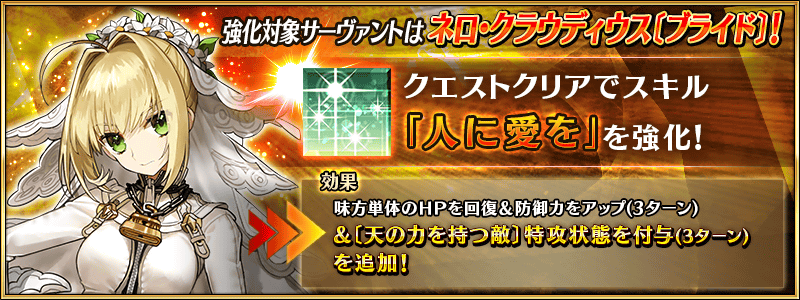
為了記念期間限定活動「Akihabara Explosion！ ～願望的街道與被刻上愛的雕像們～」舉辦，實施特別次數登入獎勵。
在期間中登入9次(1天算1次)的話，贈送黃金果實4個、聖晶石3個、呼符2張！
◆舉辦期間◆
2021年3月15日(一) 17:00～3月25日(四) 2:59
※在舉辦期間內登入合計9天的話，可領取所有的登入獎勵。
◆贈送對象◆
2021年3月24日(三) 2:59前通過「特異點F 炎上汙染都市 冬木」的御主對象
※上述時間前，在管理室(ターミナル)畫面的關卡橫幅必須要有「CLEAR」的文字顯示。
| 登入次數 | 贈送內容 | |
|---|---|---|
| 第1次 |

|
黃金果實 1個 |
| 第2次 |

|
呼符 1張 |
| 第3次 |
|
黃金果實 1個 |
| 第4次 |
|
黃金果實 1個 |
| 第5次 |
|
黃金果實 1個 |
| 第6次 |

|
聖晶石 1個 |
| 第7次 |
|
聖晶石 1個 |
| 第8次 |
|
聖晶石 1個 |
| 第9次 |
|
呼符 1張 |
※第1次的登入獎勵自3月15日(一) 17:00以後配發。 ※之後的登入獎勵會在每天3:00配發。 ※合計9天內能領取，但根據成為贈送對象的時間點，可能無法到此上限。
為了記念期間限定活動「Akihabara Explosion！ ～願望的街道與被刻上愛的雕像們～」舉辦，在迦勒底之門內開放全種類每日出現的關卡「蒐集種火」與「修練場」。
利用這點強化更多的從者，預備「Akihabara Explosion！ ～願望的街道與被刻上愛的雕像們～」吧！
◆舉辦期間◆
2021年3月15日(一) 17:00～3月29日(一) 11:59
※請注意由於以期間限定出現的「蒐集種火」及「修練場」與平常每日出現的「蒐集種火」及「修練場」的關卡不同，不會繼承「關卡情報」。
【全天開放的蒐集種火一覧】
| 關卡名 | 可做為戰利品獲得 的主要道具 |
攻略推薦 職階 |
|---|---|---|
| 【活動舉辦記念】 週一 蒐集種火<槍・殺篇> 初級、中級、上級、超級 |
Lancer、Assassin、Berserker的經驗值卡 |   |
| 【活動舉辦記念】 週二 蒐集種火<劍・騎篇> 初級、中級、上級、超級 |
Saber、Rider、Berserker的經驗值卡 |   |
| 【活動舉辦記念】 週三 蒐集種火<弓・術篇> 初級、中級、上級、超級 |
Archer、Caster、Berserker的經驗值卡 |  |
| 【活動舉辦記念】 週四 蒐集種火<槍・殺篇> 初級、中級、上級、超級 |
Lancer、Assassin、Berserker的經驗值卡 | |
| 【活動舉辦記念】 週五 蒐集種火<劍・騎篇> 初級、中級、上級、超級 |
Saber、Rider、Berserker的經驗值卡 | |
| 【活動舉辦記念】 週六 蒐集種火<弓・術篇> 初級、中級、上級、超級 |
Archer、Caster、Berserker的經驗值卡 | |
| 【活動舉辦記念】 週日 蒐集種火<隨機篇> 初級、中級、上級、超級 |
Saber、Archer、Lancer、Rider、Caster、Assassin、Berserker的經驗值卡(隨機) | - |
※Berserker在所有每日關卡皆為有效職階。
【全天開放的修練場一覧】
| 關卡名 | 可做為戰利品獲得 的主要道具 |
攻略推薦 職階 |
|---|---|---|
| 【活動舉辦記念】 週一 弓之修練場 初級、中級、上級、超級 |
Archer的靈基再臨用道具、Archer的技能強化素材道具 | |
| 【活動舉辦記念】 週二 槍之修練場 初級、中級、上級、超級 |
Lancer的靈基再臨用道具、Lancer的技能強化素材道具 | |
| 【活動舉辦記念】 週三 狂之修練場 初級、中級、上級、超級 |
Berserker的靈基再臨用道具、Berserker的技能強化素材道具 | ALL |
| 【活動舉辦記念】 週四 騎之修練場 初級、中級、上級、超級 |
Rider的靈基再臨用道具、Rider的技能強化素材道具 |  |
| 【活動舉辦記念】 週五 術之修練場 初級、中級、上級、超級 |
Caster的靈基再臨用道具、Caster的技能強化素材道具 | |
| 【活動舉辦記念】 週六 殺之修練場 初級、中級、上級、超級 |
Assassin的靈基再臨用道具、Assassin的技能強化素材道具 | |
| 【活動舉辦記念】 週日 劍之修練場 初級、中級、上級、超級 |
Saber的靈基再臨用道具、Saber的技能強化素材道具 | |
※Berserker在所有每日關卡皆為有效職階。
為了記念期間限定活動「Akihabara Explosion！ ～願望的街道與被刻上愛的雕像們～」舉辦，下述的期間中、所有從者的幕間物語消耗AP變成1/2！
※就算在戰鬥中撤退的情況，也會是同様的消耗量。
※「靈基解放關卡」為消耗AP1/2的對象外。
◆舉辦期間◆
2021年3月15日(一) 17:00～3月29日(一) 11:59
◆對象關卡◆
所有的幕間物語
【3月24日(三) 17:00追記】
其他還有，
・Akihabara Explosion！Pick Up召喚(每日交替)
・職階別Pick Up召喚(每日交替)
以期間限定舉辦中！
關於詳情，請自下述橫幅確認。
■「Akihabara Explosion！Pick Up召喚(每日交替)」詳細情報

■「職階別Pick Up召喚(每日交替)」詳細情報